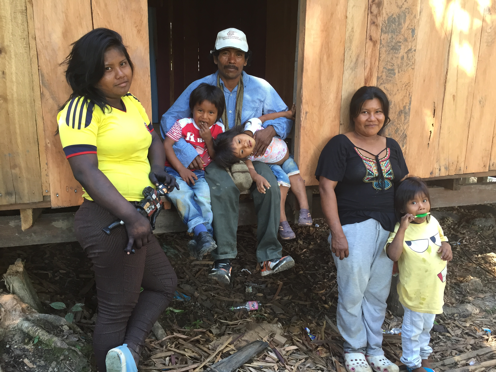

He llegado a La Chorrera, al río Igará Paraná, Putumayo. Juan y su familia pertenecen a los Mɨnɨka. Ellos nos van a alojar en su casa. Mientras esperamos que cargue gasolina para la lanchita, veo que los niños juegan a subirse a los árboles y van hasta lo más alto y se lanzan al río. Un deporte extremo hecho con la gracia de los que se saben parte de ese río. Los niños juegan como niños.
—Lo que hay en el nombre Uitoto, Relatos de un salvaje de ciudad sobre los goces poderosos de la civilización Huitoto. Omar Rincón.

Eber, el hermano de Juan, tuesta la hoja de coca. Alvaro, el primo, preparaba pintura natural para que las hijas de Juan se pinten el pelo y el cuerpo. Juan arregla el motor de la canoa. María, la mujer de Juan, teje en una vieja máquina de coser Singer. Los niños juegan al río. Las niñas adolescentes estudian para el colegio, allí viven internadas, hoy vinieron de visita. Veo la tarea y hacen biografías de Esquilo, Eurípides, Copérnico, Galileo, Descartes. Occidente con toda. El sol nos tostaba a todos. Era un 7 de agosto del 2015.
Pasa una nube. Llueve. Juan dice que él se puede conectar mentalmente y sin celular, y ríe. Sopla la lluvia y la hacer cambiar de rumbo, y ríe. La verdad funcionó lo de la nube.
Más tarde surge el amor de familia. Y se sacan los piojos. Madre a hija, hija a madre, hermana a hermano.
Al final del día todos juegan y ríen. Unos van a nadar al río, casi siempre los niños y sus madres; los adultos hombres juegan fútbol; las madres van a la cocina a preparar lo que viene para la noche. Todos juegan, ríen, conversan. Y no solo es al final del día, sino todo el día. Se ríen cuando ven televisión y ven los comerciales de cremas y menjurjes para mujeres, se ríen de nosotros los extraños, se ríen entre ellos, se ríen de la naturaleza, se ríen de cómo los blancos quieren ser indígenas, se ríen de los blancos y sus extrañas costumbres de higiene y sociedad.
Ven televisión. Solo por mirar. Se entiende poco de la selva de ciudad. Se ríen de la cantidad de cosas que se venden en ese mundo de ciudad, de cosas innecesarias. Y viendo televisión, Juan afirma: “no vamos a ser como los blancos porque no nos queda, somos como somos”. Y concluye, “no soy mi pinta, soy lo que llevo adentro”
La radio solo entra de 9 o 10 de la noche y hasta las 5 de la mañana. El horario estelar es a las 3 de la mañana, hora en que María se despierta. Las radios llegan de Bogotá. No hay estaciones cercanas que entren. La ficción de ser colombianos apenas se pega con televisión y radio.
Y vamos a la chacra, y vamos todos, y todos cogemos hoja de coca, y todos conversamos, y todos reímos.
—Pasarla bien, Relatos de un salvaje de ciudad sobre los goces poderosos de la civilización Huitoto. Omar Rincón.